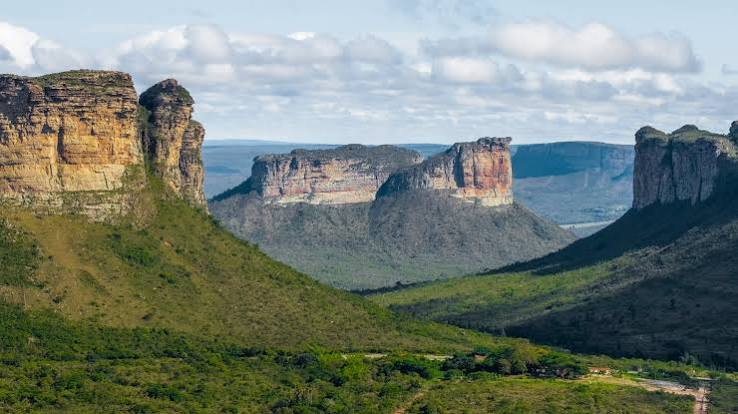
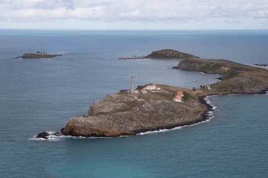
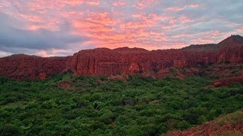

Unidades de Conservação da Bahia
As Unidades de Conservação protegem ecossistemas, espécies ameaçadas e recursos naturais importantes para o equilíbrio ambiental.

Chapada Diamantina
Localização: Bahia
Espécies protegidas: onça-pintada, tatu-canastra e arara-azul.
Conflitos: garimpo ilegal e turismo desordenado.

Parque Nacional Marinho dos Abrolhos
Localização: Sul da Bahia
Espécies protegidas: baleia-jubarte e tartaruga-verde.
Conflitos: pesca predatória e poluição marinha.

Raso da Catarina
Localização: Nordeste da Bahia
Espécies protegidas: arara-azul-de-lear.
Conflitos: caça ilegal e expansão agrícola.